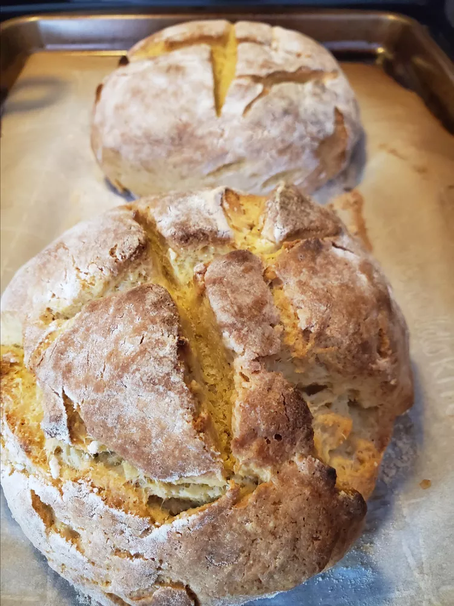

Broa

Broa (Portuguese Cornbread)
This Portuguese cornbread is amazing with soup.
Deserves to be more popular than it is.
Ingredients
- 1 ½ cups milk, or as needed
- 4 pats unsalted butter
- 2 teaspoons white sugar
- 1 ½ cups cornmeal, or as needed
- 1 (.25 ounce) package active dry yeast
- 1 pinch white sugar
- ¼ cup warm water
- 3 cups all-purpose flour
- 1 teaspoon sea salt
- 1 tablespoon olive oil, or to taste
Steps
- Heat milk in a small saucepan over medium heat until it begins to bubble. Whisk in butter and 2 teaspoons sugar. Add cornmeal and whisk until mixture reaches a thick, sauce-like consistency. Remove from heat and let cool to room temperature.
- In the meantime, sprinkle yeast and a pinch of sugar over warm water. Stir and let stand until yeast softens and begins to form a creamy foam, about 5 minutes.
- Combine flour and salt in the bowl of a stand mixture fitted with the dough hook. Add the yeast mixture and mix on low speed. Slowly pour in the milk mixture. Knead into a slightly dense dough. Remove from the bowl and roll into a ball.
- Grease the sides of a bowl or pot with olive oil and add the dough. Cover with plastic wrap and let rise in a warm place until doubled in volume, about 2 hours.
- Punch dough down and roll into 2 boules, or flat-bottomed balls. Place boules on a baking sheet lined with a silicone mat. Sprinkle tops with flour and cover with plastic wrap again. Let rise until puffy, about 1 hour.
- Preheat the oven to 500 degrees F (260 degrees C). Fill an oven-proof pot with 4 to 5 cups water and place on the bottom rack of the preheating oven.
- Cut 4 shallow slits into the tops of the puffed bread boules in a cross pattern, 2 parallel lines up and 2 across.
- Bake in the preheated oven for 10 minutes. Spritz tops with water from a spray bottle. Reduce oven temperature to 400 degrees F (200 degrees C) and continue baking until crusts are a deep brown, about 20 minutes. Remove breads from the pan and let cool for 20 minutes.
Go Back Home